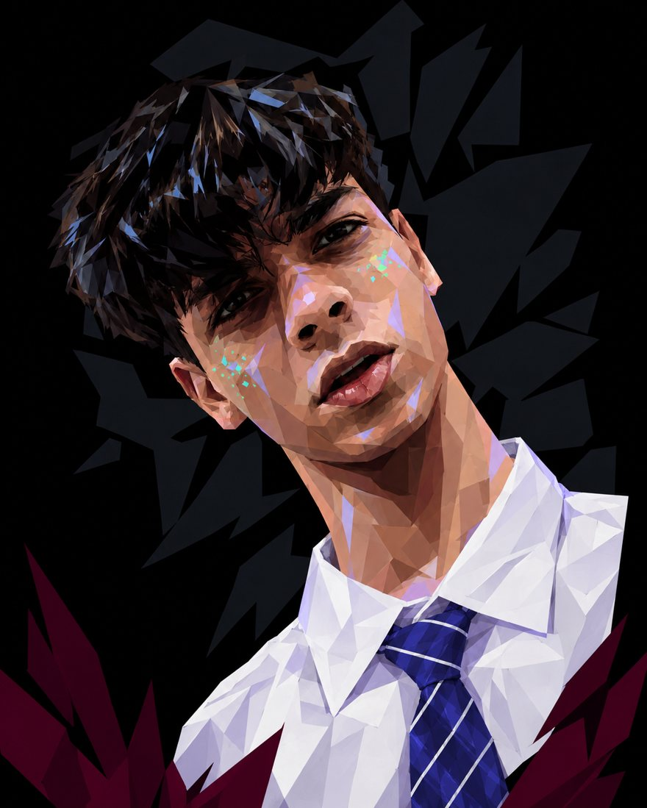
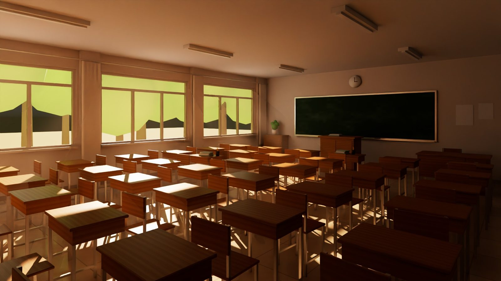
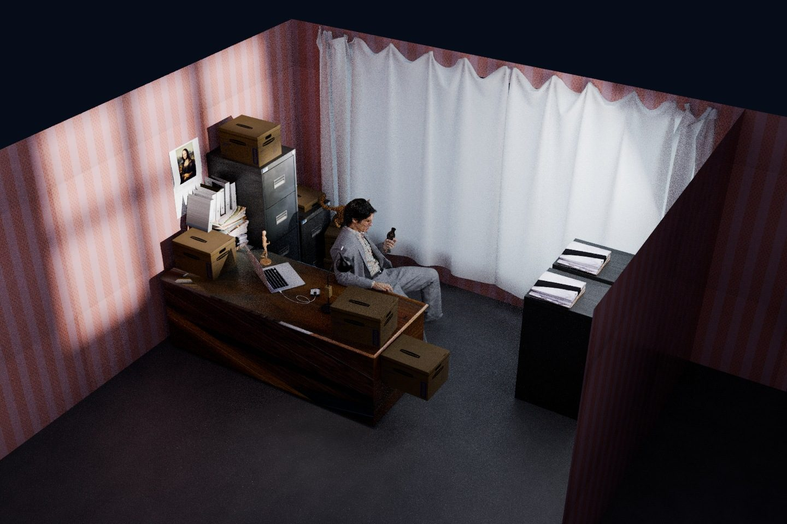
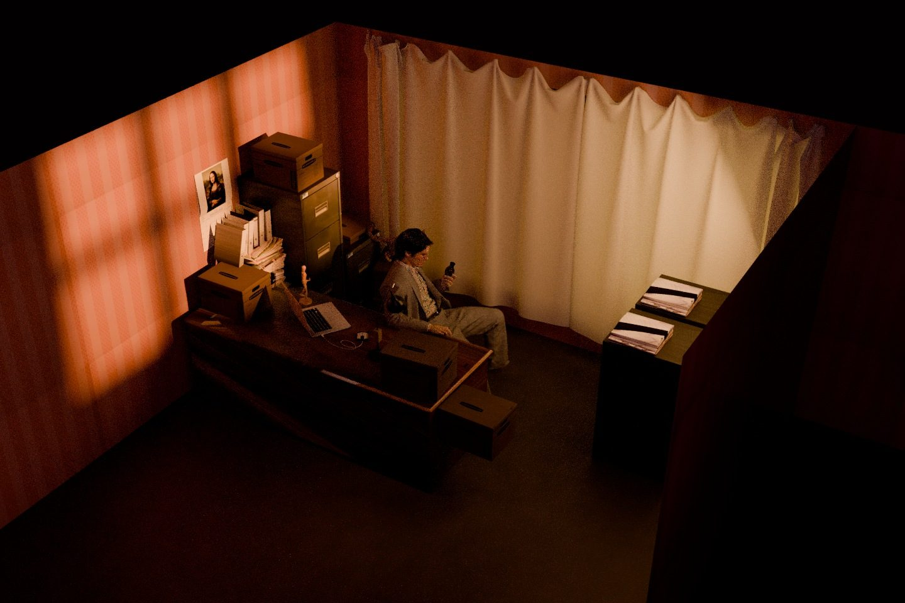
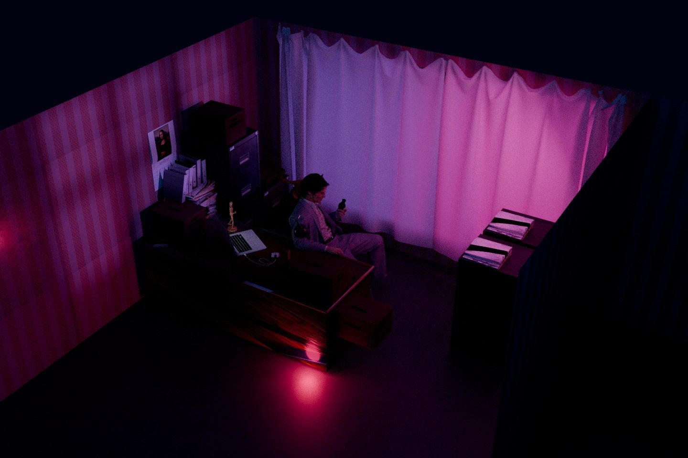
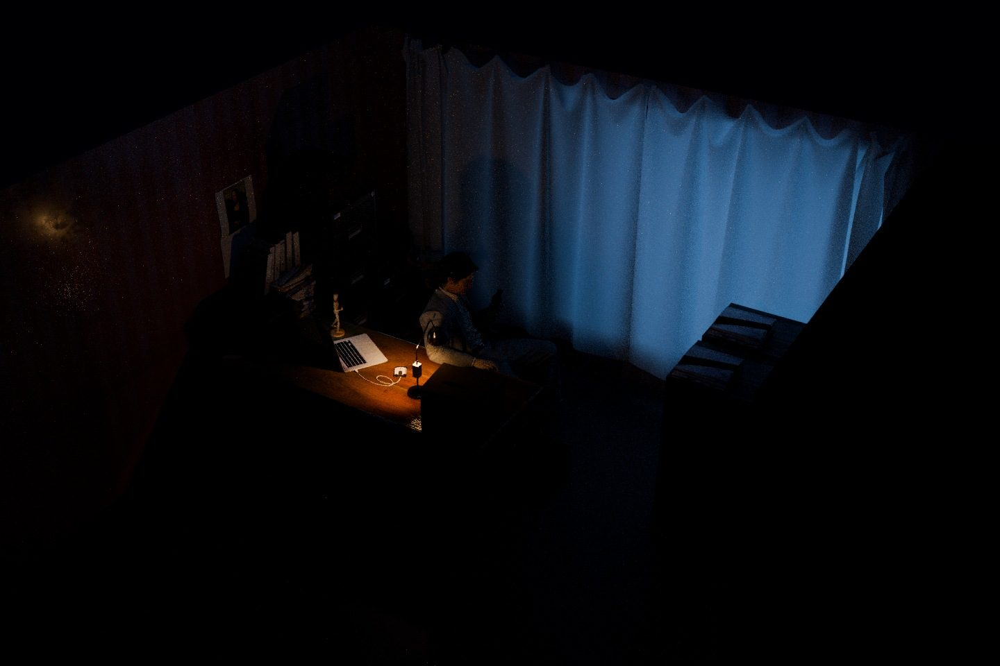

2026 · Animated short
LOSER
A 1:22 animated short set to music, told with no dialogue. Beat-mapped edit at ~86 BPM, a full colour script, 1,968 rendered frames.
I build where immersive media, 3D, motion design and AI meet. Animation & VFX at NMIMS School of Design, Mumbai.

I'm an Animation & VFX student at NMIMS School of Design (2024–2028). I research before I build: my Apple vs Meta case report runs 27 sections on why the most advanced XR device isn't always the one people adopt. I care about marketing psychology, I like leading people towards a shared creative goal, and I use AI as a real collaborator in my pipeline.
Every keycap is a drum. Click them, or play a beat on your own keyboard (Q W E R… A S D F… Z X C V B). Each hit also shows that skill, scored out of 100.
A 1:22 animated short set to music, told with no dialogue. Beat-mapped edit at ~86 BPM, a full colour script, 1,968 rendered frames.
A two-minute explainer on copyright in India, told through Meera, an illustrator whose art is used without credit. Every character, icon and sound is original.
A 27-section case report comparing two strategies for spatial computing, and why adoption doesn't simply follow specs.
A 30-second explainer on Meta's AR glasses prototype: projectors in the frame, eye and hand tracking, and a wristband that reads finger movement.
Two environment and lighting studies. Switch the views and the lights to see each scene the way I lit it.

FrontA full 3D classroom built for an assignment and lit for golden hour: low sun through the windows, warm bounce light and long shadows across the desks.




MorningThe same room re-lit four ways for my lighting assignment: soft morning daylight, warm sunset, neon night and a lone desk lamp late at night. Same geometry, four completely different moods.
My panther in 3D: modelled from my own turnaround sheet, carved from its outlines, then faceted into a low-poly sculpture with glossy black panels and amber eyes. Grab it and spin it.